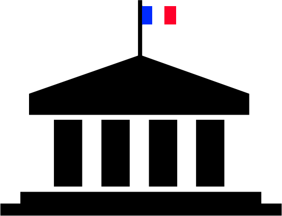

À seulement quelques semaines des élections présidentielles, le paysage politique est entaché de
scandales divers. Nous avons décidé de regarder de plus près l’activité de nos députés et d’apporter
un peu de transparence pour nos citoyens.
Qui sont-ils ? Nous représentent-ils efficacement ? Existe-t-il potentiellement d’autres conflits
d’intérêts ? Décryptage.
Les collaborateurs parlementaires
Un député sur huit emploie un membre de sa famille ...
Député employant un membre de leur famille
... potentiellement leur conjoint ?
Répartition des sexes parmi les collaborateurs familiaux
Une majorité de collaboratrice
Répartition des sexes parmi les collaborateurs parlementaires
Les femmes emploient des femmes ...
... tout commes les hommes.
En quoi le nombre de collaborateur influence-t-il l'activité du parlementaire ?
Plus on a de collaborateurs et plus on produit.

L'activité parlementaire
Après avoir regardé les collaborateurs parlementaires. On va maintenant jeter un oeil au données concernenat directement
l'activité de nos parlementaires. Qui sont ils ? Que font ils ? QUelle part de réalité dans les préjugés ?
Présence moyenne en comission en fonction du nombre de mandats
L'ancienneté favorise l'absentéisme.
Nombre moyen de rapports produits en fonction du nombre de mandats
L'ancienneté ne favorise pas le travail écrit.
Nombre moyen d'amendements adoptés en fonction de l'âge
Les jeunes adoptent beaucoup.
Nombre moyen d'interventions courtes en hémicycle en fonction de l'âge
On ose avec l'âge, puis l'on a la flemme.
Les tweets
Certains parlementaires ont de nombreux collaborateurs sans pour autant être plus actif au sein de l’Assemblée Nationale. Qu’en est-il de l’efficacité de nos élus au sein de la vie du parlement ? Certains députés sont très actifs sur les réseaux sociaux, notamment sur Twitter. Leur présence sur les réseaux est-elle à la hauteur de leur engagement à l’Assemblée Nationale ?
Présence moyenne en commission en fonction du nombre de tweets
Les républicains plutôt populaires sur Twitter.
Pour certains députés, Twitter est un canal de communication plus important que le travail réalisé à l’Assemblée Nationale. Voyons si leurs idées sont au moins suivi sur Twitter.